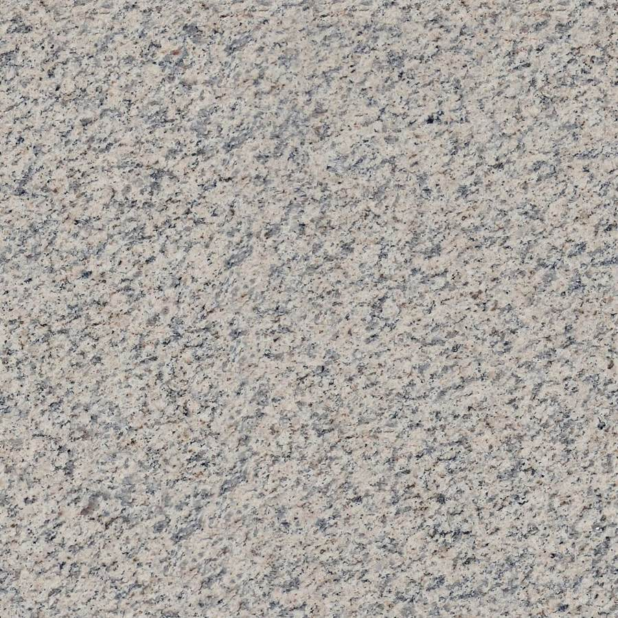
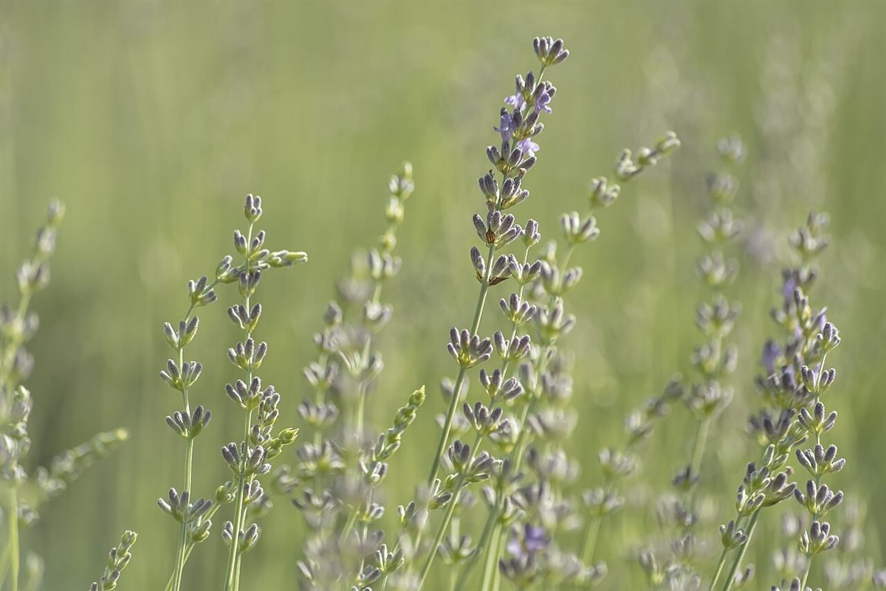

図のこと
エアフライヤーの部位の配置図
お店の詳しいことは準備中です。ここでは、制作側が考えたデザインの考え方を紹介します。
この図の読み方
番号と名前をたどる
トップの図は、エアフライヤーを横から切ったような形の簡単なイラストです。本体の外側、操作パネル、上部の加熱部、下に差し込むバスケット、バスケットの取っ手、背面側の排気口に、1から6の番号をふりました。制作側の連想で、お店の理念・由来とは無関係です。実際の製品の仕様を示すものでもありません。
空気の通り道
熱風のめぐりを三歩で
- 5加熱部で、空気が温まりファンで下へ送られる。
- 1バスケットのまわりを、温かい空気がめぐる。
- 6排気口から、空気が外へ抜けていく。
一般的な構造を図にしたもので、特定の製品の仕様ではありません。
六つの部位
凡例
- 1バスケット(調理かご)食材を入れる、底に網や細かい穴のあるかご。引き出しのように本体から抜き差しする。
- 2ハンドル(取っ手)バスケットの前面についていて、引き出すときに持つ部分。
- 3本体ケース(外装)全体を包む箱形の外側。内側の熱を閉じこめる役目がある。
- 4操作パネル(ダイヤルと表示窓)温度や時間を合わせる部分。つまみと小さな表示窓が並ぶ。
- 5加熱部(ヒーターとファン)上部にあり、ヒーターで温めた空気をファンで下へ送り出す。
- 6排気口(スリット)内部の熱い空気が外へ抜ける、細い隙間。
写真(イメージ)
写真(イメージ)




写真はイメージです。お店のものではありません。